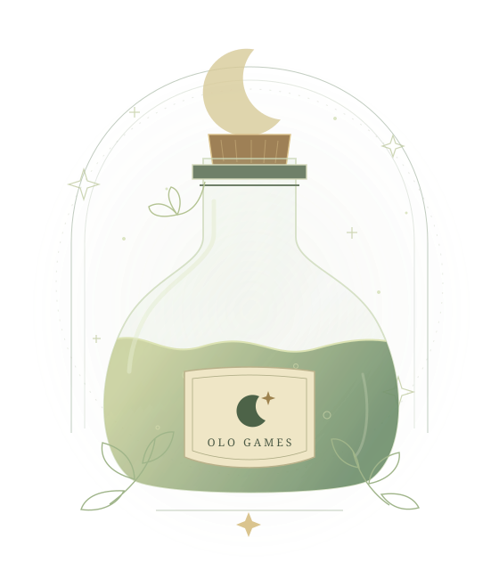

01 / PREPARE
Grind your herbs.
Start with the ingredients. Prepare and grind herbs for your potion making.
A new brew is in the making
A little shop. A little witchcraft.
Grind herbs, brew potions, and distil ingredients in a single-player VR sandbox from olo games.
Discover the craft
The craft
Potion making is at the heart of Witch Shop Simulator. Here’s a first look at the craft we’re bringing to VR.
01 / PREPARE
Start with the ingredients. Prepare and grind herbs for your potion making.
02 / BREW
Bring your ingredients to the cauldron. Get to know the art of brewing.
03 / DISTIL
Explore another side of potion preparation with ingredient distillation.
A note from the studio
We’re olo games, the developer behind Witch Shop Simulator. The game is currently in development for Meta Quest 3 and Meta Quest 3S.
We’ll share gameplay, screenshots, and release news as development progresses.
Until then, keep a little room for magic.
Before your first brew
Witch Shop Simulator is in development. A release date and store page have not been announced yet.
The game is being developed for Meta Quest 3 and Meta Quest 3S.
Yes. Witch Shop Simulator is being developed as a single-player experience, without multiplayer, chat, or microphone features.
The game is planned as a paid release with no in-app purchases. Pricing will be announced closer to launch.
The Meta Quest version is intended for players aged 10 and over, including children aged 10–12, teens, and adults. Official regional content ratings have not yet been assigned.